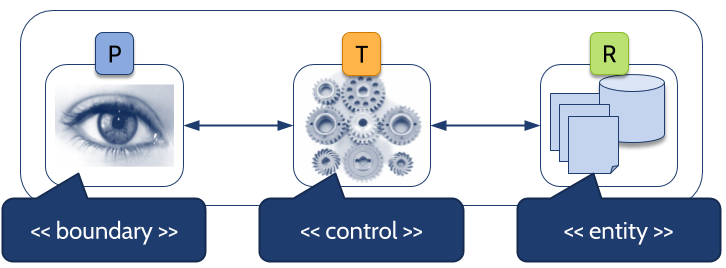
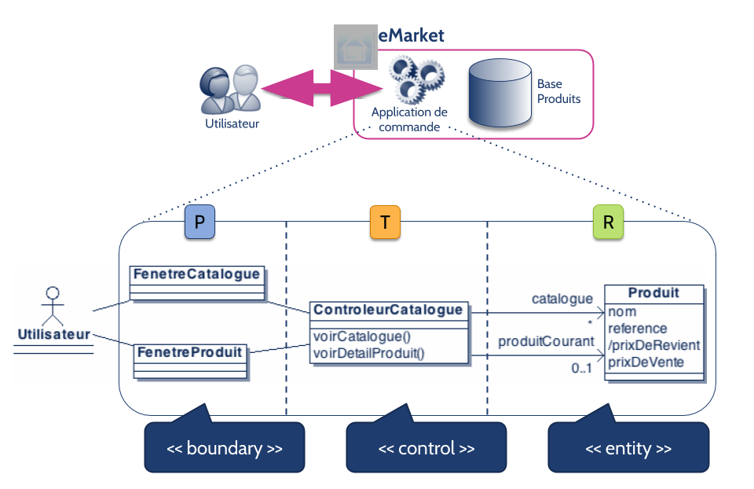
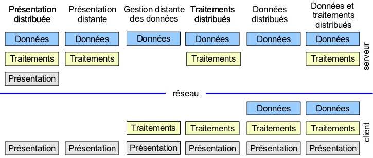
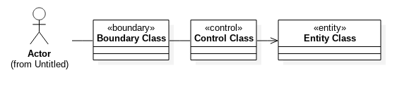
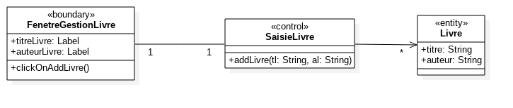
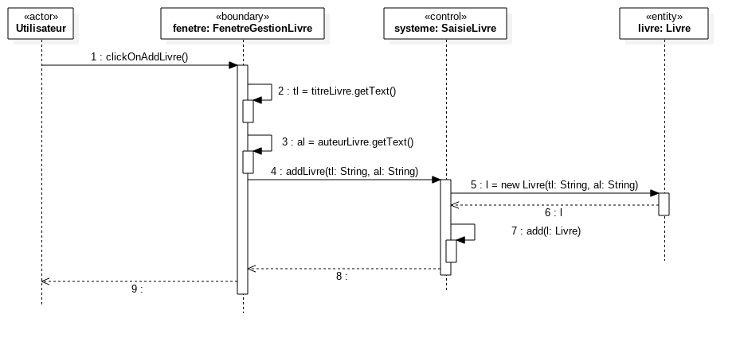
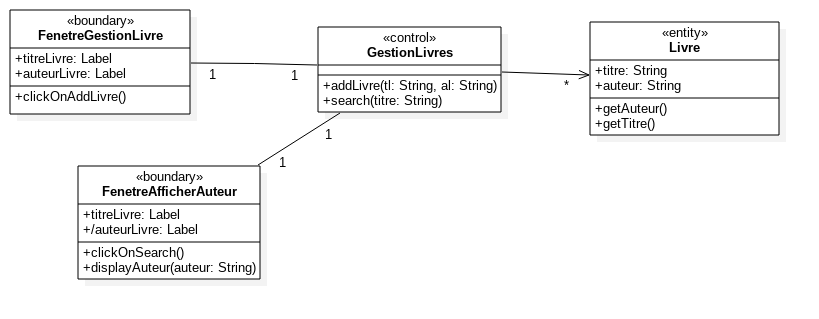
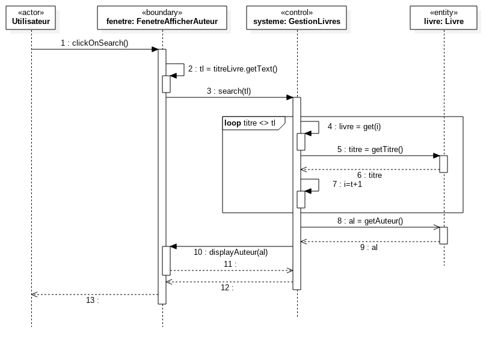

Qualité de développement
Modèle d'architecture ''n-tier''
2A - Bachelor Universitaire de Technologie
IUT d'Orsay - Université Paris-Saclay - 2023/2024
IUT d'Orsay - Université Paris-Saclay - 2023/2024

Introduction
- Une pratique de base dans la conception de logiciels consiste
à décomposer le système en sous-systèmes.- séparer les responsabilités.
- D'un manière général, le modèle décrivant l'architecture d'un logiciel
se compose de plusieurs packages :
- un package pour l'interface utilisateur,
- un package pour l'accès aux bases de données,
- etc.
Introduction
- Les systèmes informatiques modernes sont organisés en couches horizontales, elles-mêmes découpées en partitions verticales.
-
Cette découpe est d'abord logique, puis éventuellement physique
en termes de machines. -
Objectif du cours : faire passer quelques idées fondamentales
sur les architectures en couches dites ''n-tier''.
Couches applicatives
Principe de conception = séparation des responsabilités
- 3 types de responsabilités = 3 couches principales 
- Présentation : envoie les requêtes utilisateurs à la couche métier
et présente les informations renvoyées par les traitements - Traitement/logique applicative : décrit les services disponibles
dans l'application - Ressources/stockage : gère l'accès aux données du système
Couches applicatives

Une architecture multi-couches
- Le principe de l'architecture 3-tier est d'isoler la logique métier en interdisant l'accès direct aux données par les classes de présentation.
-
Challenges des architectures multi-couches :
- Performance : temps de réponse moyen
- Fiabilité, disponibilité : résistance à la charge, la qualité de service
- Utilisabilité, interopérabilité : compatibilité avec d'autres applications
- Sécurité : authentification, intégrité, confidentialité, non-répudiation
- Évolutivité : facilité de maintenance, d’ajout de fonctionnalités
Architecture 3-tier
- L'architecture 3-tier présente les couches standards d’un SI
(système d’information).- une décomposition logique et non physique.
- peut être déployée dans un même processus sur le même nœud
ou être réparties entre plusieurs processus et plusieurs machines.

Architecture 3-tier
- La raison d'être des couches et leur nombre varient d'une application à l'autre
et d'un domaine à l'autre. - Le choix des plateformes matérielles et logicielles, et des frameworks associés (J2EE, .NET, ...), influe sur l'architecture de déploiement.
Les stéréotypes de Jacobson
- Pour rendre les modèles plus précis et plus lisibles, Ivar Jacobson,
a proposé de catégoriser les classes d'analyse/conception. - Trois catégories de classes ont été proposées :
- boundary (frontière) : modélise les interactions entre un acteur externe
avec le système modélisé - control (contrôle) : modélise la coordination, l'enchaînement et le contrôle
des objets métier (reliés à un cas d'utilisation particulier). - entity (entité) : modélise les concepts métier manipulés
- boundary (frontière) : modélise les interactions entre un acteur externe
Les classes boundary
Les classes boundary sont identifiées lors de la
spécification
des interfaces utilisateurs/IHM (maquettes écran, ...).
Les classes control
Les classes control sont chargées de la coordination
entre les classes Boundary et les classes Entity.
Les classes entity
Les classes entity représentent les concepts métier
ou les classes du domaine.
Les Règles d'interactions

- Les classes boundary ne peuvent être reliées qu'aux classes control,
- Les classes control ont accès aux classes boundary, aux classes entity
et aux autres contrôles, - Les classes entity ont accès aux autres classes entity seulement
(parfois aux classes control).
Gestion d'une bibliothèque
Le cas : saisie d'un nouveau livre

Gestion d'une bibliothèque
Le cas : saisie d'un nouveau livre

Gestion d'une bibliothèque
Le cas : afficher l'auteur d'un livre

Gestion d'une bibliothèque
Le cas : afficher l'auteur d'un livre
